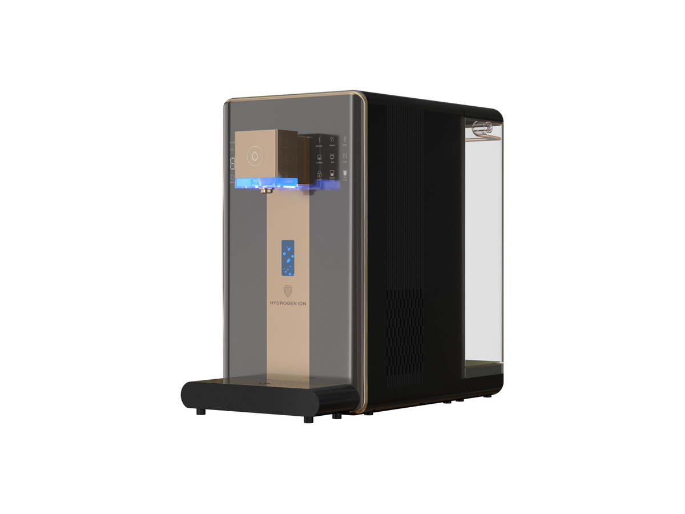
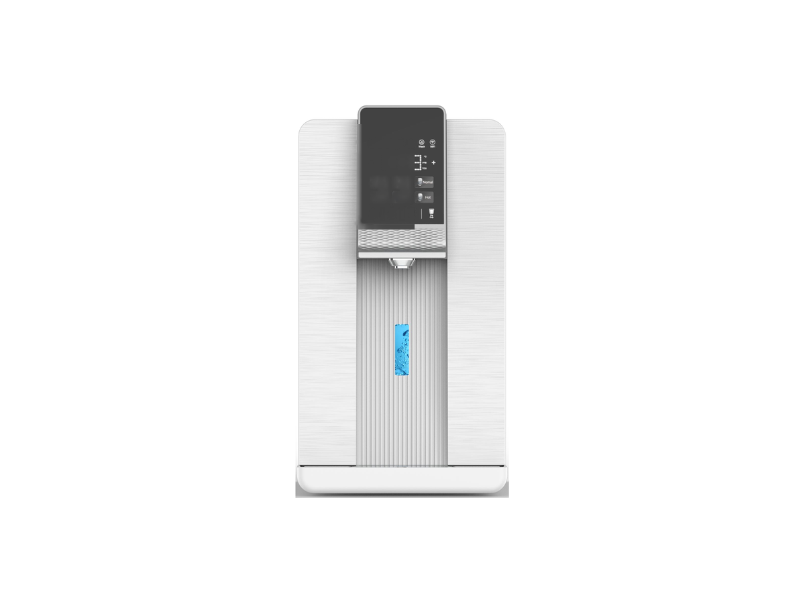
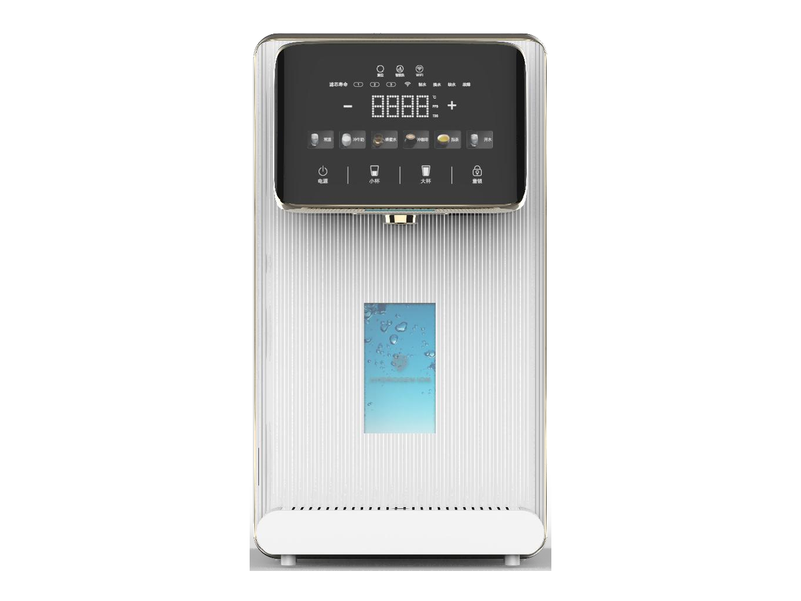
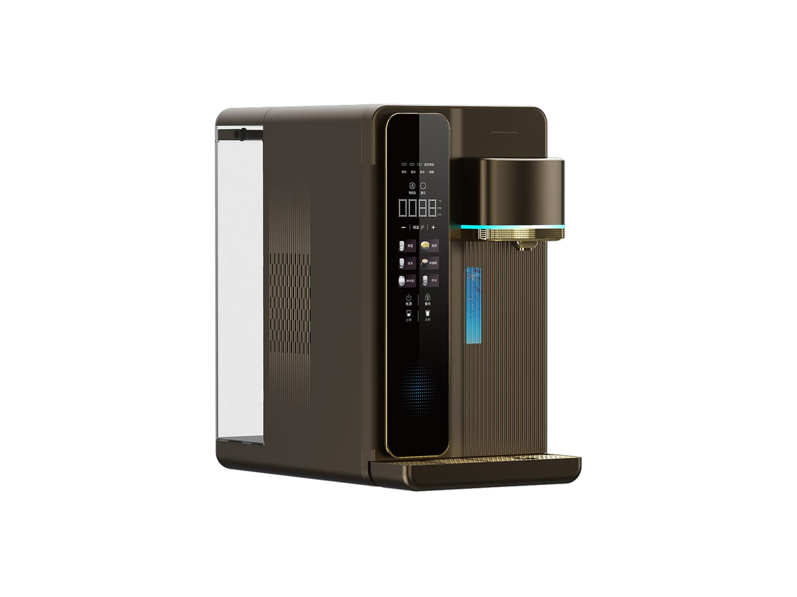

台式净水器
台式净水器RP-C07
带加热壶的 RO 净水器
SKU: RP-C07
起订量：询价时确认

台式净水系统
台式富氢水 RO 饮水机 (W23)
RP-C04 — 台式富氢水 RO 饮水机. 关键规格： RO 膜／产水量 200 GPD / 30 L/h. 规格按型号及订单确认。同系列另有四款富氢水变体（W19、W20、W22、W25），见下文。
电压／频率可按目标国家配置，其他配置按订单确认。
RP-C04 是一款台式富氢水 RO 饮水机，主推款为 W23，同系列另有四款富氢水变体（W19、W20、W22、W25）。主推款 RO 产水量 200 GPD / 30 L/h，额定净水量 2000 L，采用 PAC 复合＋RO＋天然矿化过滤，SPE 电解制氢。整个系列共用 SUPERMIX 气液混合、RO 过滤、半导体制冷、UVC、3 秒速热和大水箱。
起订量是多少？
首单每款 200 台，返单 500 台。
可以先订样机吗？
可以。样机 15 天做好，样机费在首批大货订单中退还。大货在样机确认后 40 天出货，FOB 深圳。
五款变体有什么区别？
完整产水量、尺寸和额定净水量参数以主推款 W23 为准。其余四款共用系列功能，区别在外观配色。报价统一按 RP-C04，询价时请注明款式；W19、W20、W22、W25 的其他参数按订单确认。
将鼠标悬停在款式图片上查看对应参数。触屏设备请点按图片。




各变体的完整参数并排对比。下方的规格表为 RP-C04 的参数。
| 规格 | RP-C04-1 — 主款 (W23) | RP-C04-2 — 富氢变体 (W19) | RP-C04-3 — 富氢变体 (W20) | RP-C04-4 — 富氢变体 (W22) | RP-C04-5 — 富氢变体 (W25) |
|---|---|---|---|---|---|
| 款式 | 台式富氢水 RO 饮水机 | 台式富氢水净饮机 | 台式富氢水净饮机 | 台式富氢水净饮机 | 台式富氢水净饮机 |
| RO 膜／产水量 | 200 GPD / 30 L/h | 按订单确认 | 按订单确认 | 按订单确认 | 按订单确认 |
| 额定净水量 | 2000 L | 按订单确认 | 按订单确认 | 按订单确认 | 按订单确认 |
| 尺寸 | 475 × 240 × 430 mm | 按订单确认 | 按订单确认 | 按订单确认 | 按订单确认 |
| 温度控制 | 6 档温度程序 | 按订单确认 | 按订单确认 | 按订单确认 | 按订单确认 |
| 加热方式 | 2200 W；18 L/h（≥90°C） | 按订单确认 | 按订单确认 | 按订单确认 | 按订单确认 |
| 制氢方式 | SPE 电解 | 按订单确认 | 按订单确认 | 按订单确认 | 按订单确认 |
| 系列共性 | SUPERMIX 气液混合技术、RO 过滤、半导体制冷、UVC、3 秒速热、大水箱 | SUPERMIX 气液混合技术、RO 过滤、半导体制冷、UVC、3 秒速热、大水箱 | SUPERMIX 气液混合技术、RO 过滤、半导体制冷、UVC、3 秒速热、大水箱 | SUPERMIX 气液混合技术、RO 过滤、半导体制冷、UVC、3 秒速热、大水箱 | SUPERMIX 气液混合技术、RO 过滤、半导体制冷、UVC、3 秒速热、大水箱 |
| 外观 | 白色 | 黑金 | 银白 | 白色 | 古铜棕 |
| 电压／频率 | 按目标国家配置 | 按目标国家配置 | 按目标国家配置 | 按目标国家配置 | 按目标国家配置 |
系列共性为目录中 W19 / W20 / W22 / W23 / W25 系列所列的共性；W19、W20、W22、W25 各变体的具体产水量、尺寸与额定净水量按订单确认，不发布未经确认的参数。
ROPureOEM 目录中的 12 行规格。
| RO 膜／产水量 | 200 GPD / 30 L/h |
|---|---|
| 额定净水量 | 2000 L |
| 过滤方式 | PAC 复合 + RO + 天然矿化 |
| 制氢方式 | SPE 电解 |
| 温度控制 | 6 档温度程序 |
| 加热方式 | 2200 W；18 L/h（≥90°C） |
| 水箱 | 原水 6 L；废水 2.5 L |
| 进水／工作压力 | 市政自来水；4–38°C；0.4–0.8 MPa |
| 外壳／净重 | ABS / 10.7 kg |
| 尺寸 | 475 × 240 × 430 mm |
| 电压／频率 | 按目标国家配置 |
| 其他配置 | 按订单确认 |
规格来源于 ROPureOEM 目录。尚未确认的数值标注为“按订单确认”，不发布未经确认的参数。